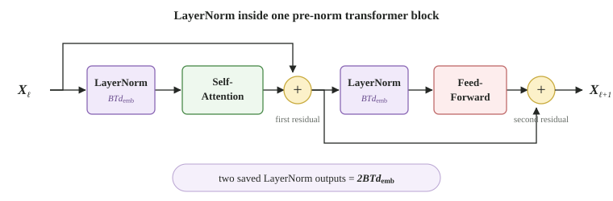
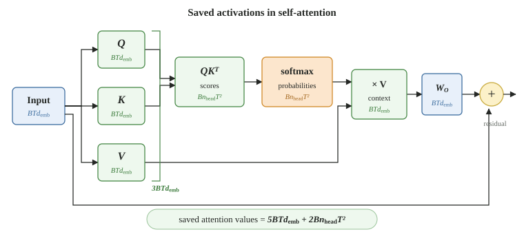
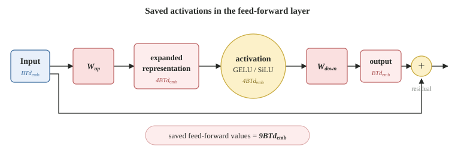

Estimating Transformer Training Memory
We are going to estimate the memory needed to train a transformer. As in the layer-count estimate, we will take a simplified view of a decoder-style transformer. The goal is not to reproduce the exact number reported by a particular deep-learning framework. It is to see which parts of the architecture consume memory, and how that memory changes with the batch size and sequence length.
We will use a transformer with \(L\) layers, embedding dimension \(d_{\text{emb}}\), \(n_{\text{head}}\) attention heads, vocabulary size \(d_{\text{vocab}}\), batch size \(B\), and sequence length \(T\). Let \(N_{\text{param}}\) denote the total number of model parameters.
We will count the memory in the same order that training uses it:
- load the weights;
- perform the forward pass and save its activations; and
- store the values needed for the backward pass and optimiser update.
The first and third parts are mainly controlled by the number of parameters. Forward-pass activation memory is controlled by the shapes of the tensors flowing through the model. This distinction matters: two training runs using the same model can have very different memory requirements merely because they use different values of \(B\) and \(T\).
Loading the Weights
The model starts with \(N_{\text{param}}\) weights. If the weights are stored in FP32, each one occupies 4 bytes. Merely loading the model therefore requires
\begin{align} M_{\text{weights}} = {} & 4N_{\text{param}} \text{ bytes}. \label{eq:weights} \end{align}In FP16 or BF16, the working weights occupy 2 bytes each, so this part would instead be \(2N_{\text{param}}\) bytes. That is not the full training requirement: the gradients and optimiser state arrive when we consider the backward pass.
Loading 7 billion FP32 weights requires 28 GB before we store a single activation or gradient.
Forward-Pass Activations
The forward pass produces intermediate tensors called activations. We have to retain enough of them to calculate gradients during the backward pass. Let \(s\) be the number of bytes used by each saved activation: \(s=2\) for FP16 or BF16 and \(s=4\) for FP32. We will first count the number of scalar values and multiply by \(s\) at the end.
The input embedding has shape \(B \times T \times d_{\text{emb}}\), so it contributes \(BTd_{\text{emb}}\) values. We next count the activations inside one transformer layer.
LayerNorm
We will use a pre-norm transformer block. In this arrangement, the input to the layer is normalised before self-attention. After the attention output is added back to the residual stream, the result is normalised again before entering the feed-forward layer:
\[ \begin{aligned} \widetilde{\X}_{\ell} &= \X_{\ell} + \textsf{Self-Attention}\left(\textsf{LayerNorm}(\X_{\ell})\right), \\ \X_{\ell+1} &= \widetilde{\X}_{\ell} + \textsf{Feed-Forward}\left(\textsf{LayerNorm}(\widetilde{\X}_{\ell})\right). \end{aligned} \]
Each LayerNorm output has shape \(B \times T \times d_{\text{emb}}\). There are two LayerNorm operations in each transformer block, so their main outputs contribute
\begin{align} n_{\text{act}}[\text{LayerNorm}] = {} & 2BTd_{\text{emb}}. \label{eq:layernorm_activations} \end{align}For the backward pass, each LayerNorm may also save a mean and inverse standard deviation for every token. With two LayerNorms, that is four additional saved values per token in each transformer layer. We omit these smaller values from our first-order estimate.
Self-Attention
The query, key, and value tensors each have shape \(B \times T \times d_{\text{emb}}\) after all heads are considered. Together they contain
\[ 3BTd_{\text{emb}} \]values. The attention score tensor \(\Q\K^\T\) has shape \(B \times n_{\text{head}} \times T \times T\). Applying softmax produces another tensor of the same shape. These two tensors contribute
\[ 2Bn_{\text{head}}T^2 \]values. Multiplying the attention probabilities by \(\V\) produces \(BTd_{\text{emb}}\) values, and the output projection produces another \(BTd_{\text{emb}}\). Under this bookkeeping, the self-attention part of one layer therefore contributes

The \(T^2\) term is the important one. Doubling the sequence length doubles most activations, but it quadruples the conventional attention matrices.
Feed-Forward Layer
We assume a two-matrix feed-forward layer with expansion factor 4. The upward projection produces \(4BTd_{\text{emb}}\) values. Its element-wise activation function produces another tensor of the same size, and the downward projection produces \(BTd_{\text{emb}}\) values. So,

Combining \(\eqref{eq:layernorm_activations}\), \(\eqref{eq:attention_activations}\), and \(\eqref{eq:ff_activations}\), one transformer layer contributes
\begin{align} n_{\text{act}}[\text{Transformer Layer}] = {} & \underbrace{2BTd_{\text{emb}}}_{\text{LayerNorm}} + \underbrace{5BTd_{\text{emb}} + 2Bn_{\text{head}}T^2}_{\text{Self-Attention}} + \underbrace{9BTd_{\text{emb}}}_{\text{Feed-Forward}} \nonumber \\ = {} & 16BTd_{\text{emb}} + 2Bn_{\text{head}}T^2. \label{eq:layer_activations} \end{align}This is where the linear coefficient becomes 16: two terms from LayerNorm, five from self-attention, and nine from the feed-forward layer.
Backward-Pass Values
The backward pass calculates one gradient for every weight. Adam also maintains a first-moment and second-moment estimate for every weight. If these values are stored in FP32, they require
\begin{align} M_{\text{backward}} = {} & \underbrace{4N_{\text{param}}}_{\text{gradients}} + \underbrace{4N_{\text{param}}}_{\text{first moment}} + \underbrace{4N_{\text{param}}}_{\text{second moment}} \nonumber \\ = {} & 12N_{\text{param}} \text{ bytes}. \label{eq:backward_values} \end{align}Adding the FP32 weights from \(\eqref{eq:weights}\) gives \(16N_{\text{param}}\) bytes of persistent training state. A common mixed-precision arrangement arrives at the same total in a different way: 2 bytes for the low-precision working weight, 2 bytes for its gradient, 4 bytes for an FP32 master weight, and 8 bytes for the two FP32 Adam moments.
A 7-billion-parameter model needs about 112 GB of weights, gradients, and Adam state before counting the forward-pass activations.
Putting Everything Together
We count the input embedding once, the expression in \(\eqref{eq:layer_activations}\) \(L\) times, and the final vocabulary logits once. The logits have shape \(B \times T \times d_{\text{vocab}}\). Our working estimate for saved activation memory is therefore
\begin{align} M_{\text{act}} = s \left[ BTd_{\text{emb}} + L\left(16BTd_{\text{emb}} + 2Bn_{\text{head}}T^2\right) + BTd_{\text{vocab}} \right]. \label{eq:activation_memory} \end{align}Finally, adding the loaded weights in \(\eqref{eq:weights}\), the backward-pass values in \(\eqref{eq:backward_values}\), and the forward-pass activations in \(\eqref{eq:activation_memory}\) gives
\begin{align} M_{\text{train}} \approx {} & \underbrace{4N_{\text{param}}}_{\text{weights}} + \underbrace{12N_{\text{param}}}_{\text{backward-pass values}} \nonumber \\ & {} + s \left[ BTd_{\text{emb}} + L\left(16BTd_{\text{emb}} + 2Bn_{\text{head}}T^2\right) + BTd_{\text{vocab}} \right] \nonumber \\ = {} & 16N_{\text{param}} + s \left[ BTd_{\text{emb}} + L\left(16BTd_{\text{emb}} + 2Bn_{\text{head}}T^2\right) + BTd_{\text{vocab}} \right]. \label{eq:training_memory} \end{align}Equation \(\eqref{eq:training_memory}\) is in bytes.
Worked Example and Model Sizes
Consider the following approximate setup:
- \(N_{\text{param}} = 7 \times 10^9\),
- \(L=33\), \(d_{\text{emb}}=4096\), and \(n_{\text{head}}=32\),
- \(d_{\text{vocab}}=43{,}520\),
- \(B=1\), \(T=2048\), and
- BF16 activations, so \(s=2\).
Using Equation \(\eqref{eq:training_memory}\), the weights and backward-pass values occupy 112 GB. The saved activations occupy about 26.8 GB. The combined estimate is therefore about 138.8 GB.
If we change only the batch size from \(B=1\) to \(B=8\), the activation estimate grows eightfold to about 214 GB. The parameter-dependent terms do not change. This is why reducing the micro-batch size can rescue a run that is running out of memory even though the model itself has not changed.
There is another useful consequence. Two batches can contain the same number of tokens, \(BT\), without using the same amount of memory. The settings \(B=8,T=2048\) and \(B=16,T=1024\) have the same \(BT\), so their linear activation terms match. However, the first setting has twice the value of \(BT^2\), and therefore twice the conventional attention-matrix memory.
Comparing Model Sizes
Before calculating memory, we should check that each representative architecture actually has approximately the claimed number of parameters. The parameter calculation is derived in Estimating Layers in Transformers. Under the same standard transformer assumptions,
\[ N_{\text{shape}} \approx 2d_{\text{vocab}}d_{\text{emb}} + 12Ld_{\text{emb}}^2. \]The first term counts the input and output embeddings. The second counts \(L\) transformer blocks. The head count does not appear because it cancels under standard multi-head attention; every shape below uses an integer head dimension \(d_{\text{head}}=d_{\text{emb}}/n_{\text{head}}\).
| Nominal size | Representative shape \((L,d_{\text{emb}},n_{\text{head}},d_{\text{vocab}})\) |
\(N_{\text{shape}}\) | Difference |
|---|---|---|---|
| 1 M | \((4,128,4,832)\) | 0.999 M | −0.1% |
| 10 M | \((8,288,6,3{,}584)\) | 10.027 M | +0.3% |
| 40 M | \((10,512,8,8{,}448)\) | 40.108 M | +0.3% |
| 100 M | \((12,768,12,9{,}728)\) | 99.877 M | −0.1% |
| 1 B | \((23,1{,}792,14,31{,}744)\) | 1.000 B | <0.1% |
| 7 B | \((33,4{,}096,32,43{,}520)\) | 7.000 B | <0.1% |
| 70 B | \((86,8{,}192,64,45{,}568)\) | 70.003 B | <0.1% |
These are synthetic standard-transformer shapes chosen to match the nominal sizes. They are not the configurations of particular named models; Section 6 performs that separate check using published models.
Having checked the parameter counts, we can calculate each part of the memory separately. To answer the M2 question, every row below uses a micro-batch size of \(B=1\), ordinary FP32 Adam state, and FP32 activations (\(s=4\)). This is the conservative default because MLX uses FP32 as its default floating-point type. BF16 only applies if the model and its computation are explicitly converted to BF16.
\[ \begin{aligned} M_{\text{weights}} &= 4N_{\text{param}}, \\ M_{\text{act}}(T) &= 4\left[ BTd_{\text{emb}} + L\left(16BTd_{\text{emb}}+2Bn_{\text{head}}T^2\right) + BTd_{\text{vocab}} \right], \\ M_{\text{backward}} &= 12N_{\text{param}}, \\ M_{\text{total}} &= M_{\text{weights}}+M_{\text{act}}(T)+M_{\text{backward}}. \end{aligned} \]All values in the table are decimal GB, where \(1\text{ GB}=10^9\) bytes. A GiB is a binary unit: \(1\text{ GiB}=2^{30}\) bytes, or about \(1.074\) GB. To avoid mixing the two units, we use GB throughout the calculations below.
| Model size | Context \(T\) | Weights \(4N_{\text{param}}\) |
Forward activations \(M_{\text{act}}(T)\) |
Backward values \(12N_{\text{param}}\) |
Total | Practical conclusion |
|---|---|---|---|---|---|---|
| 1 M | 512 | 0.004 | 0.052 | 0.012 | 0.068 | 4 GB M2: easy |
| 2,048 | 0.612 | 0.628 | ||||
| 10 M | 512 | 0.040 | 0.184 | 0.120 | 0.344 | Reasonable 4 GB memory target |
| 2,048 | 1.944 | 2.104 | ||||
| 40 M | 512 | 0.160 | 0.354 | 0.480 | 0.994 | Below 4 GB in the equation only |
| 2,048 | 3.429 | 4.069 | Already above 4 GB | |||
| 100 M | 512 | 0.400 | 0.625 | 1.200 | 2.225 | Too little headroom for confidence |
| 2,048 | 6.126 | 7.726 | Above 4 GB | |||
| 1 B | 512 | 4.000 | 2.095 | 12.000 | 18.095 | 24 GB class |
| 2,048 | 16.482 | 32.482 | 48 GB class | |||
| 7 B | 512 | 28.000 | 6.741 | 84.000 | 118.741 | At least 192 GB aggregate, sharded |
| 2,048 | 53.540 | 165.540 | ||||
| 70 B | 512 | 280.000 | 34.738 | 840.000 | 1,154.738 | At least 1.5 TB aggregate, distributed |
| 2,048 | 277.466 | 1,397.466 |
We can check the two rows nearest the 4 GB boundary directly. For 40 M parameters at \(T=2048\), \(0.160 + 3.429 + 0.480 = 4.069\) GB. For 100 M parameters at the same context length, \(0.400 + 6.126 + 1.200 = 7.726\) GB. In each sum, the terms are weights, forward activations, and backward-pass values in that order.
This explains why a 40 M model can fail on an M2 with only 4 GB available for training. At \(T=2048\), the equation itself is already slightly above 4 GB. At \(T=512\), the equation is below 1 GB, but that still does not guarantee that the training program will fit.
The equation counts the main stored tensors. The training framework also needs working space while operations are running, and MLX may keep recently freed memory in a cache rather than immediately returning it to the system. The MLX memory documentation calls this cache memory “not currently used” memory that has not been returned to the system allocator. A micro-batch larger than \(B=1\) multiplies the activation column again.
With a hard 4 GB memory budget, about 10 M parameters is a conservative memory target. This means the tensors should fit; it does not mean that training will finish quickly.
Fitting in memory is necessary, but it is not sufficient for practical training. Training time also depends on the number of training tokens, the arithmetic required for each token, the M2's sustained compute and memory bandwidth, and how efficiently MLX executes the model. A 10 M parameter model can fit within the memory budget and still take too long for a particular experiment. The distinction between memory capacity and computation is developed further in Estimating the Compute and Memory Needed for Language Models.
A 40 M model remains a borderline memory experiment. It needs a short context, micro-batch size 1, careful dtype control, and an efficient compiled training step before training speed is considered.
MLX supports converting module parameters with
set_dtype,
and BF16 can reduce memory. However, this is a different training
configuration: the dtypes of the weights, gradients, Adam state, and
activations should all be checked rather than assumed.
The final test is to measure a real training step. MLX provides
get_peak_memory
for this purpose. The measurement should be taken after the Adam state
has been created and after the compiled training step has warmed up.
The 70 B row should be read as a scale check, not a proposed single machine. Its model state alone is about 1.12 TB under ordinary Adam. Training it requires the state and activations to be distributed across many accelerators, or a different optimiser and precision setup.
Does This Hold in the Real World?
We can apply Equation \(\eqref{eq:training_memory}\) to the published configurations of several real models. For a fair comparison, every row below uses \(B=1\), \(T=2048\), and BF16 activations, so \(s=2\). We use the same conventional attention calculation for every model, even when its published maximum context is much longer.
| Model | \(N_{\text{param}}\) | \(L\) | \(d_{\text{emb}}\) | \(n_{\text{head}}\) | \(d_{\text{vocab}}\) | Published context | Model state | Activations | Total |
|---|---|---|---|---|---|---|---|---|---|
| Qwen2.5-0.5B | 0.49 B | 24 | 896 | 14 | 151,936 | 32 K | 7.84 GB | 7.67 GB | 15.51 GB |
| Llama 3.2 1B | 1.23 B | 16 | 2,048 | 32 | 128,256 | 128 K | 19.68 GB | 11.27 GB | 30.95 GB |
| Qwen2.5-1.5B | 1.54 B | 28 | 1,536 | 12 | 151,936 | 32 K | 24.64 GB | 9.08 GB | 33.72 GB |
| Mistral 7B | 7.3 B | 32 | 4,096 | 32 | 32,768 | 32 K | 116.80 GB | 25.92 GB | 142.72 GB |
| Llama 3 8B | 8 B | 32 | 4,096 | 32 | 128,256 | 8 K | 128.00 GB | 26.31 GB | 154.31 GB |
The parameter term immediately gives the right scale. Even Qwen2.5-0.5B requires 7.84 GB for weights, gradients, and Adam state under our assumptions. Full-parameter Adam training of any model in this table therefore cannot fit within 4 GB without changing the optimiser, precision, or location of the training state.
There is also a measured result with which we can compare our scale. Qwen reports full-parameter training of its earlier 7 B model using two 80 GB A100 GPUs. Its published profiling table reports 139.2 GB at 256 tokens, 148.0 GB at 512 tokens, and 162.0 GB at 1024 tokens. The architecture and implementation are not identical to our 7 B example, but these measurements are in the same neighbourhood as our estimate.
The activation column is less exact. These real models use RMSNorm, gated feed-forward layers, and grouped-query attention, whereas our calculation uses one simplified transformer block. Modern training also uses techniques such as FlashAttention and activation checkpointing to retain fewer activations.
Distributed training changes the per-device number too. Fully sharded training divides parameters, gradients, and optimiser state across devices. LoRA and QLoRA reduce memory in a different way by freezing the original model and training only a small adapter; they are therefore not full-parameter training runs described by Equation \(\eqref{eq:training_memory}\).
Equation \(\eqref{eq:training_memory}\) gets the scale right, especially the cost of full-parameter Adam state. It is not an exact prediction once activation-saving or sharding techniques are used.
What Changes the Estimate?
The expression above is intentionally simple. Several common techniques change it substantially:
- Activation checkpointing saves only selected layer outputs and recomputes the missing activations during the backward pass. It trades additional computation for lower memory.
- Memory-efficient attention avoids materialising the full \(T \times T\) score and probability tensors in accelerator memory. This removes the most painful part of the quadratic memory term, even though the arithmetic of standard dense attention remains quadratic in \(T\).
- A fused cross-entropy loss can avoid retaining the full \(B \times T \times d_{\text{vocab}}\) logit tensor.
- Sharding distributes parameters, gradients, optimiser state, or activations across devices. It reduces memory per device; ordinary data parallelism instead keeps a complete model replica on every device.
- Different architectures change the constants. RMSNorm retains different statistics from LayerNorm; gated feed-forward layers, mixture-of-experts layers, dropout, and different attention implementations do not save exactly the set of tensors counted above.
Despite these qualifications, the decomposition is useful. Parameter memory grows with \(N_{\text{param}}\). Most activation memory grows with \(LBTd_{\text{emb}}\). Conventional attention adds a term growing with \(LBn_{\text{head}}T^2\). Once these three pieces are visible, the effect of changing the model, batch size, or context length becomes much easier to reason about.